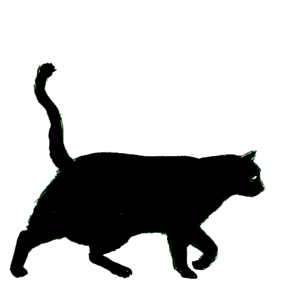
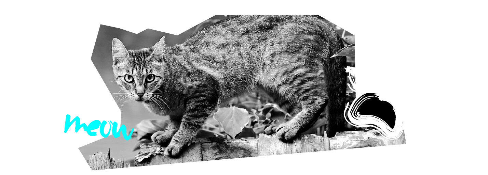

<!DOCTYPE html>
<html lang="en"></html>
<head>
    </script>
    <meta name="viewport" content=width=device-width, initial-scale=1.0/>
    <style>
      <link rel="icon" type="image/png" href="faviconFCCO.ico">
      <link rel="apple-touch-icon" href=faviconFCCO.png"

      .sidepanel  {
        width: 0;
        position: fixed;
        z-index: 1;
        height: 250px;
        top: 0;
        left: 0;
        background-color: #111;
        overflow-x: hidden;
        transition: 0.5s;
        padding-top: 60px;
      }
      
      .sidepanel a {
        padding: 8px 8px 8px 32px;
        text-decoration: none;
        font-size: 25px;
        color: #818181;
        display: block;
        transition: 0.3s;
      }
      
      .sidepanel a:hover {
        color: #f1f1f1;
      }
      
      .sidepanel .closebtn {
        position: absolute;
        top: 0;
        right: 25px;
        font-size: 36px;
      }
      
      .openbtn {
        font-size: 20px;
        cursor: pointer;
        background-color: #111;
        color: white;
        padding: 10px 15px;
        border: none;
      }
      
      .openbtn:hover {
        background-color:#444;
      }

      0


      </style>
      </head>
      <body>
      <div id="mySidepanel" class="sidepanel">
        <a href="javascript:void(0)" class="closebtn" onclick="closeNav()">×</a>
        <a href="Services.html">Services</a>
        <a href="Why Trap-Neuter-Return.html">Why Trap-Neuter-Return?</a>
        <a href="Volunteer.html">Volunteer</a>
        <a href="Catio-Tour-2020.html">Catio Tour 2020</a>
        <a href="index.html">Home</a>
      </div>
    
      <button class="openbtn" onclick="openNav()">☰ Menu</button>  
      <script>
      function openNav() {
        document.getElementById("mySidepanel").style.width = "250px";
      }
      
      function closeNav() {
        document.getElementById("mySidepanel").style.width = "0";
      }
      </script>
  <link rel="stylesheet" href="../css/style2.css"/>
    <title>Feral Cat Coalition</title>
</head>
<body>
  <body style="background-color: yellow;"></body>
  <div class="container">
    <h2> Feral Cat Coalition of Oregon</h2>
    <
    </div>
    <div class>
        <h2>Why Trap-Neuter-Return?</h2>
        <a id="moveimg"></a>
        <div class="textbody">
            <h3> Why Trap-Neuter-Return? <em>Because it works!</em></h3>
        <h3>Information on how well TNR works is beginning to accumulate.</h3> 
        <p>The Stanford University Cat Network reduced its feral population from 1000-1500 cats to 300 over a ten-year period.</p>
            
            <h3>TNR is the compassionate approach/solution to feral and stray cat overpopulation. </h3>
            <p>While TNR actually reduces the number of cats breeding, it also opens the door to educating people about the importance of spaying and the plight of feral and stray cats. Trapping and killing teaches young and old that it is okay to create unwanted offspring and then kill the surplus - leaving no room for education or compassion for life.</p>
            
            <h3>Trapping and killing does not solve the problem</h3> 
            <p> Trapping and killing has been practiced for many years (as the only option available) and it does not work. For all the years this approach was practiced, the cat population continued to explode.</p>
    
            <h3>New cats replace those cats removed</h3> 
            <p>Cats tend to congregate around a food source. When cats are trapped and removed from an area, new cats move in to take advantage of the food source. </p>
              
            <h3>Trapping and killing is actually more expensive than TNR.</h3> 
            <p>Trapping and killing cats is a tax payer burden. It costs on average $75 to $100 for an animal control agency to trap, house, kill, and dispose of one cat. It costs a program like ours $25 to spay or neuter one cat.</p>
        </div>
   </div>
   <p></p>
   <div class="footer">
    <h4>We rely on your donations and volunteer time!</h4>
    <button class="button">Donate Now</button>
 </div>
</body>
 